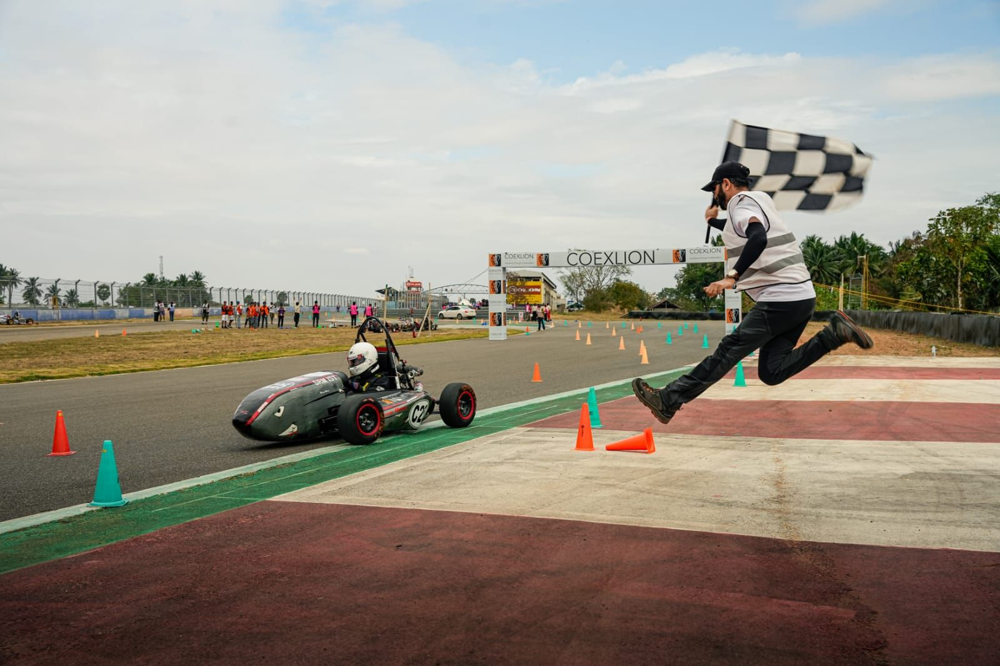
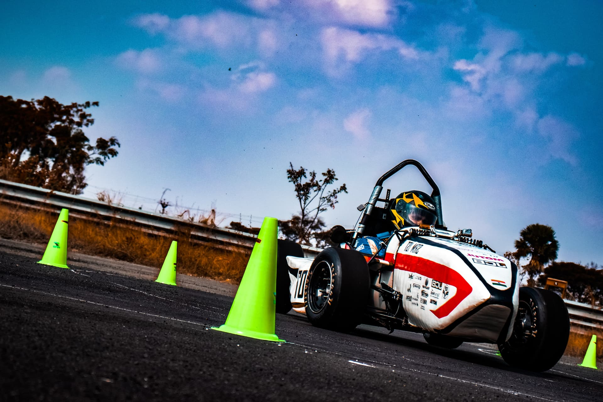
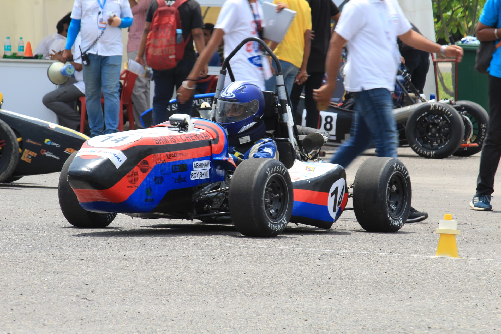
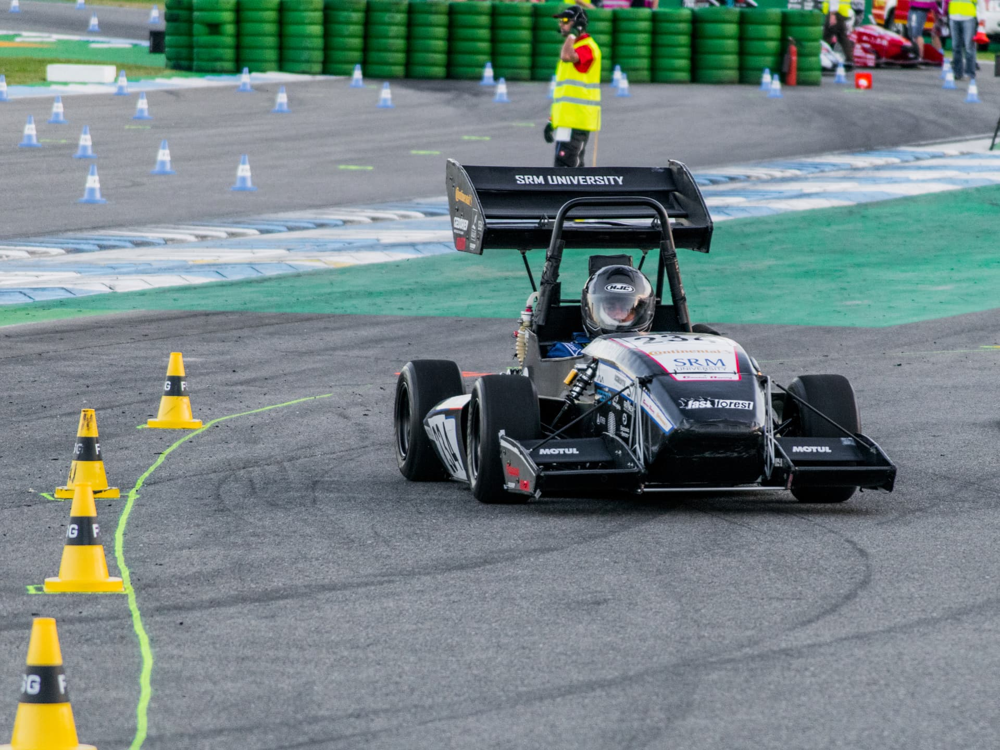
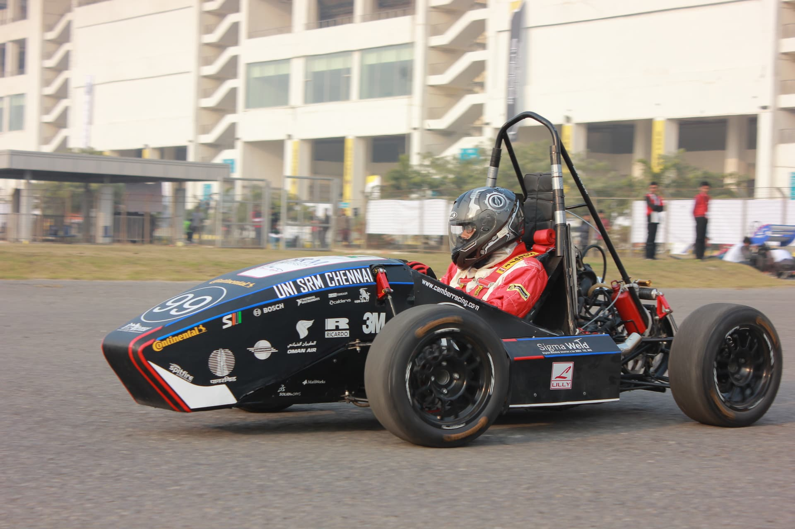
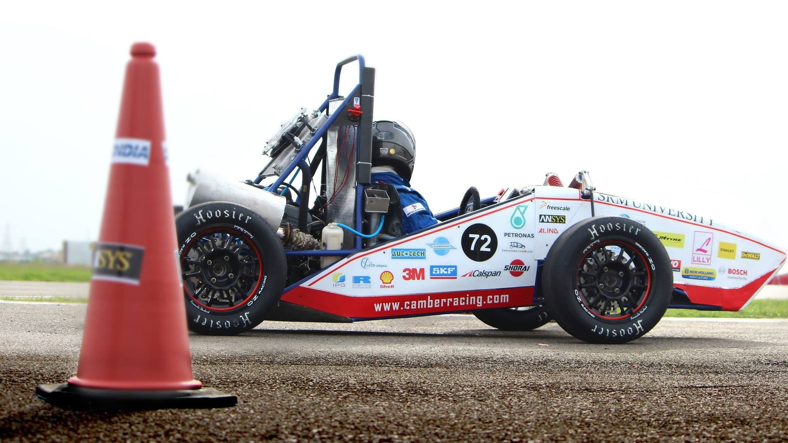
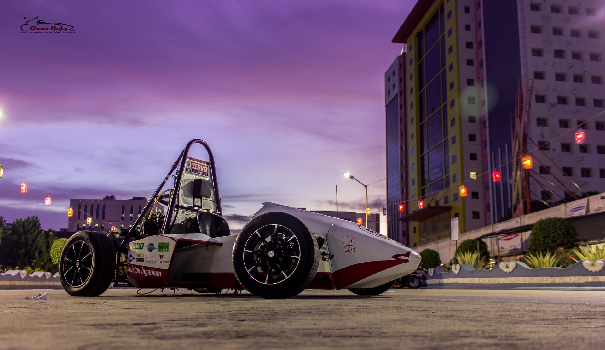
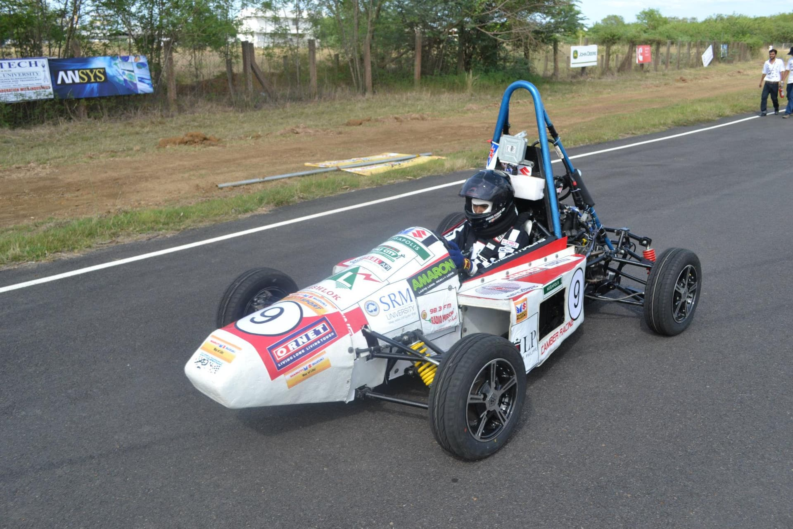
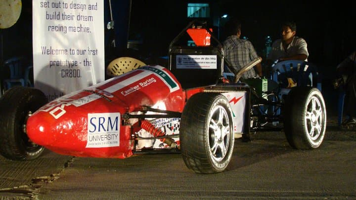

| Engine | KTM 390cc Engine, Single Cylinder |
|---|---|
| Chassis | Steel Tubular Spaceframe |
| Suspension | Double Wishbone with Ohlins TTX Dampers |
| Brakes | Custom CNC Machined Calipers |
| Weight | Approx 195kg (excluding driver) |

The 10th edition of team saw the built of a masterpiece namely 'CR-X'. It was not only one of the lightest cars in the event but also fastest among the 'single cylinder' engines. The team clocked one of the best acceleration times, 5.038 seconds at Formula Bharat 2019.

CR-18 was built upon the idea of performance and speed and was the team's first turbo charged car. The car also featured a fully in house manufactured Aero kit. It was the fastest car at Supra 18, clocking 5.4 seconds in the acceleration event.

Having participated in FSG 15, the team went all out to put their learnings to practice. CR-16 was a major step up from the previous cars, with both its performance and stunning looks. Weighing in at 195kgs, this car was also equipped with the team's first Aero kit.

Designed for the 2015-2016 season, this masterpiece showed its mettle in Formula Student Germany 2015 by being the only Indian team on track for the dynamic events. This vehicle had also bagged the runner up spot in Formula Student India in 2016.

The learning from the Beast were carried forward to our next vehicle, the CR14. With a major change in the powertrain of the vehicle shifting from 800cc to a 610cc engine capacity limit, the main target to make a light and compact vehicle with a high power to weight ratio was achieved in the CR14. The team, for the first time incorporated the use of Carbon fibre in the vehicle as one of the measures to reduce the weight of the vehicle. The CR14 was a major step forward for the team after the Beast.

With our first outing done, and setting our eyes at the Championship of the coming season, we started off, determined to bounce back. And thus came into existence, our next car, redefining performance and perfection- The BEAST! With a detailed review of the errors committed on the last car, the design team made a comprehensive effort, modelling and assembling even the most intricate components resulting in the most effective and frugal designs. Once the designs were frozen, the fabrication team took charge and delivered an accurate car, completely in agreement with our designs. The extra effort, put in, focusing on the body works was highly fruitful resulting in the addition of an elegant style quotient to the aesthetics. With a mix of speed, power, stability and reliability, the nick name -The BEAST -was justified. This polar white race vehicle impressed everyone at the event with its amazing performance and the results do the talking.

LJM01 was the successor for the first car and prototype CR800. If CR800 meant embarking upon the way of professionalism and success, LJM01 was surely an important future for achieving this feat. It is a prized possession of our team as each and every inch of the car was made to near to perfection on a very tight schedule. The design departments fastidious approach allowed the team to come up with new or more innovative and alternative ways to manufacture and build the car from scratch rather than connecting the shortcoming observed in the CR800. The car had outdone a lot of the other teams in the racing season for 2011 for SUPRASAE. The marketing efforts that we put in for the season also meant that we were one of the best branded teams at the competition.

Since we had no earlier experience of manufacturing a race car, we first decided to get that out of the way by coming up with a prototype vehicle. We wanted to avoid the situation of turning up at the competition with the first car we collectively built. Thus came into existence the CR800, our first prototype. This was a car which was built from whatever scrap material we could find in and around the University. The team went down to brass tacks and we entered the vast ocean that is motorsport engineering! The CR800 was the first big success we had and we unveiled it publically at SRM University's biggest national cultural fest 'Milan 2011' in March in front of 2000+ people. We generated a lot of interest during this event post the launch.